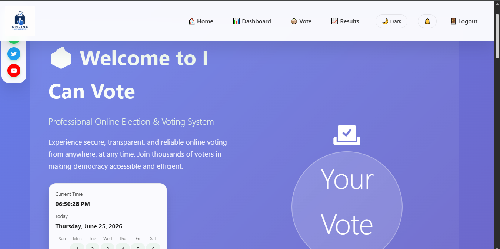

An online voting web application that allows voting from different places and intervals.
This report describes the application workflow, security considerations, and user interface design.
The I Can Vote Online Voting System is a web-based application developed to digitize and simplify the voting process within organizations, institutions, universities, and communities. The system allows eligible voters to register, view candidates, cast votes electronically, and view election results in a secure and transparent environment. The project was developed using HTML, CSS, JavaScript, and IndexedDB for local data storage.
Traditional voting methods are often time-consuming, costly, and prone to errors. Physical voting requires printing ballot papers, manual vote counting, and significant human involvement. In some cases, results may be delayed, records may be lost, and voter participation may be limited due to distance or accessibility challenges. These limitations reduce efficiency and transparency in the electoral process.
The Online Voting System provides a digital platform where elections can be managed electronically. Users can securely register, log in, view available elections, and cast votes from any device with internet access. The system automatically records votes and generates results instantly, reducing manual work and improving accuracy.
To view the hosted web application, open the live Online Voting System project.

Select one or more images and they will appear below.